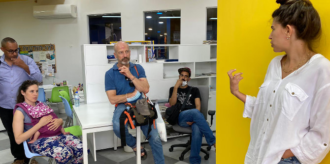
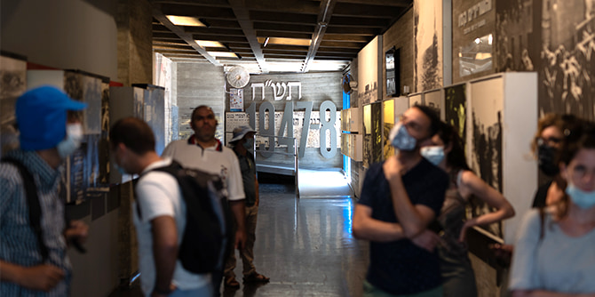

כחלק ממהלך למידה מעמיק במסגרת יחידת לימוד העוסקת במנהיגות ושינוי, העמיתים מובילים סיורים במרחבי העשייה היומיומית שלהם. סיורים אלו מהווים רכיב משמעותי בלמידת האתגרים והסוגיות שהעמיתים נדרשים להם בשטח, ומאפשרים מבט רחב על כלל הנגב. השנה לווה רכיב זה באתגר חדש, אך כדרך ההתמודדות האנושית עם החיים לצד נגיף הקורונה, זכינו לסדרת מפגשים מרתקת.
במפגש הראשון, שהתקיים בזום, התוועדנו לתרבות במרחב הכפרי. סיירנו במועצה אזורית רמת הנגב ושמענו מפי
אביבה פרידמן על המשמעות של צריכה וייצור של תרבות לגווניה השונים במרחב דליל אוכלוסייה, ביישובים הנמצאים במרחקים גדולים יחסית זה מזה ועדיין קרובים אל ערים גדולות כמו אשדוד ואף לשולי מטרופולין תל אביב. בהמשך היום קפצנו במהירות אל המועצה האזורית רמת הנגב, וממפגשים שערך
בוזי רביב, למדנו על הדמויות שמייצרות חשיבה אחרת לנושא התרבות, כמו סלון ביתי שמשמש כתיאטרון יישובי ואף שילוב של רדיו אינטרנטי בפאב מקומי. את היום הכפרי סיימנו במפגש בקיבוץ חצרים אצל
עמרי לפידות. באמצעות המפגש למדנו מעט על חיי התרבות בתנועה הקיבוצית, ועל משמעותה והשתנותה לאורך השנים.
 מרכז הצעירים, אופקים
במפגש השני בסדרה סיירנו במרכז העיר אופקים, שבה פועל נדב משעלי. בסמוך למבנה ההיסטורי של קולנוע "כוכב", שהיה מרכז תרבות ומפגש מרכזי באופקים, זכינו למפגש במרכז והצעירים ולהקרנה פרטית של סרטו הראשון של נדב באולם הסינמטק של אופקים שהוא הקים. בהמשך היום נסענו לנתיבות, ושם פגשנו יזמית מקומית העוסקת במיתוג העיר וביצירת מקומות מפגש והזדהות של תושבי העיר. את המפגש יזם יצחק כהן, אשר מחבר בין אנשים ומקומות באזור שבו הוא מתגורר ובנתיבות.
המפגש השלישי שהתקיים לקראת החזרה ללמידה היברידית, כלל מפגש במוזיאון יד מרדכי והדרכה מרתקת על אספקטים ומחשבות, על מבנה, הדרכה ואוצרות מפי
תמר הרצברג. לאחריו נפגשנו עם מייסד בית הספר לתנועה "אדמה",
ניר בן גל, ושוחחנו על יצירה בדרום, על פעילותו במשך 17 שנים במצפה רמון ועל המעבר לשדרות.
ההיברדיות של הסיורים, כמו העושר שלהם וההזדמנות להכיר את עשייתם של עמיתי התוכנית מקרוב, גרמה לכולנו להתפעמות רבה, לצד ההבנה כי יש עוד עשייה רבה להרחבת הפעולות המרשימות הללו ולחשיפת הציבור הרחב לעושר התרבותי של הנגב.

מוזיאון יד מרדכי 'משואה לתקומה'
{kind=link}
{kind=link}